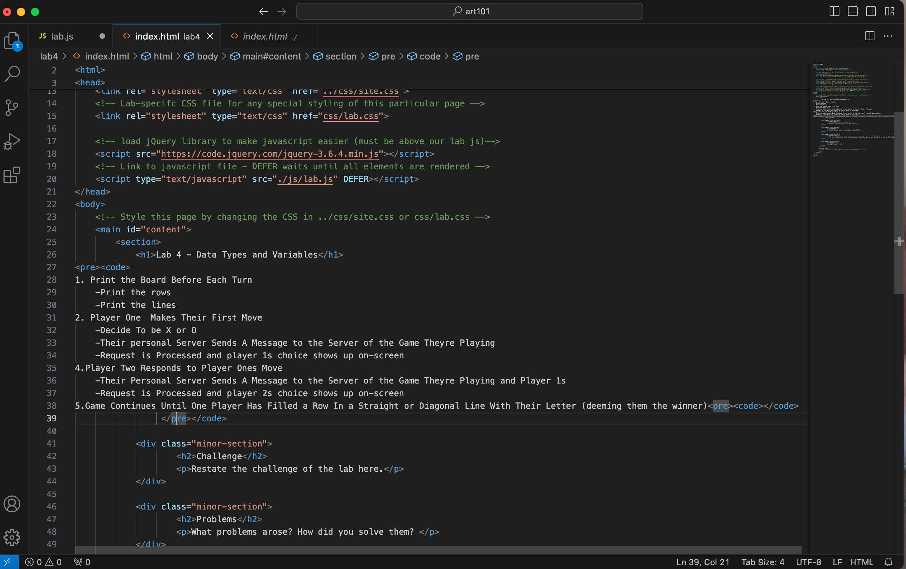
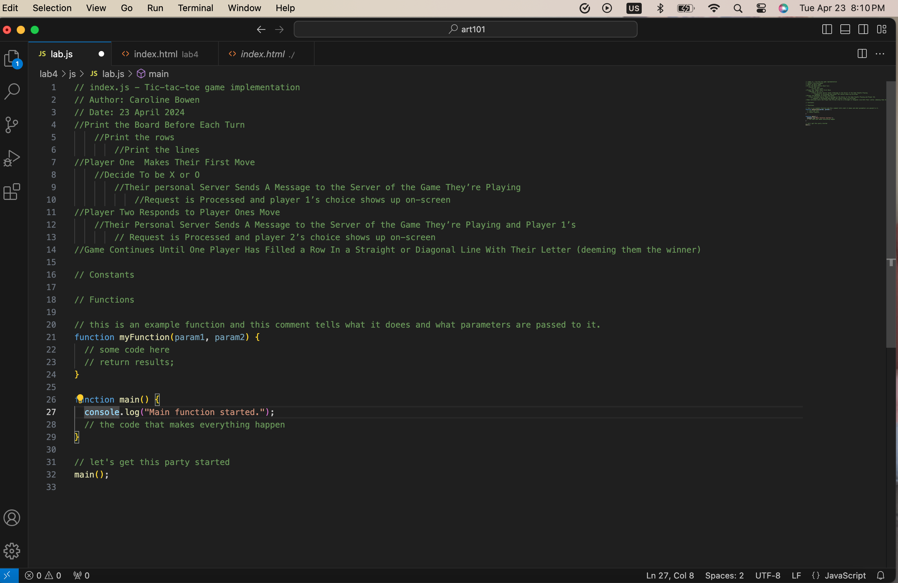

Lab 4 - Data Types and Variables
 Challenge
The challenge of the lab is to understand pseudocode, the reasons psuedocode is used, and the method by which we were taught pseudocode. Additionally, task 4 encourages us to use knowledge from previous assignments to improve the end webpage.
Problems
We struggled with where in the HTML to place the pre-code. We weren't sure if Wes wanted it displayed on the webpage or if it was only meant to be placed in the HTML and that's it. I also had a hard time with the CSS. When I tried adding classes and ID's to the HTML they always turned red.
Results
- How to hem a pair of pants
- Remove the pre-existing hem if there is one.
- Fold the bottom of the pants inward until they are the desired length
- Pin the fabric above the fold
- Iron the fold so that it is straight
- Turn the pants inside out
- Using a sewing machine, sew a new line above the fold
- Cut the excess fabric above the new hem off
- Turn your freshly hemmed pants right-side out Done!
1. Print the Board Before Each Turn
-Print the rows
-Print the lines
2. Player One Makes Their First Move
-Decide To be X or O
-Their personal Server Sends A Message to the Server of the Game Theyre Playing
-Request is Processed and player 1s choice shows up on-screen
4.Player Two Responds to Player Ones Move
-Their Personal Server Sends A Message to the Server of the Game Theyre Playing and Player 1s
-Request is Processed and player 2s choice shows up on-screen
5.Game Continues Until One Player Has Filled a Row In a Straight or Diagonal Line With Their Letter (deeming them the winner)